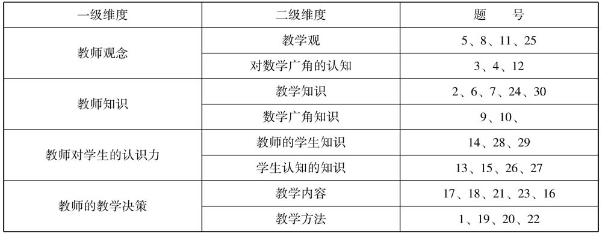
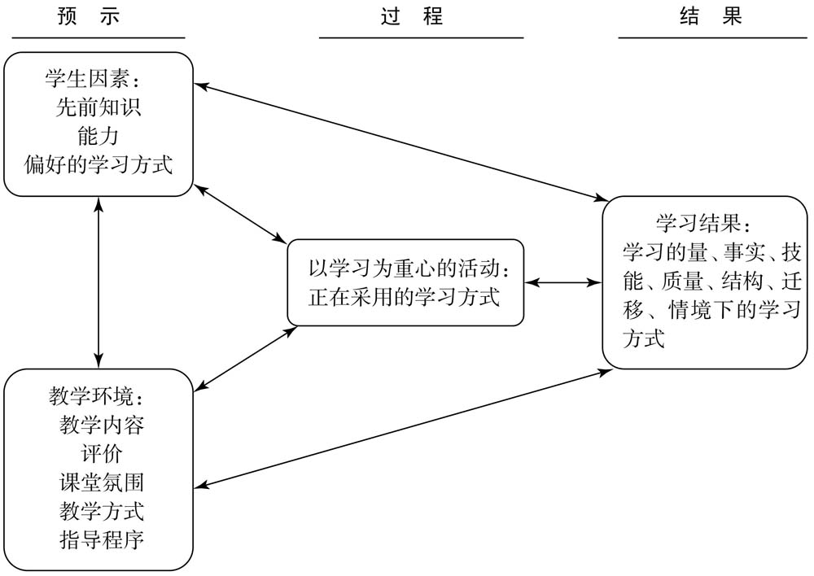
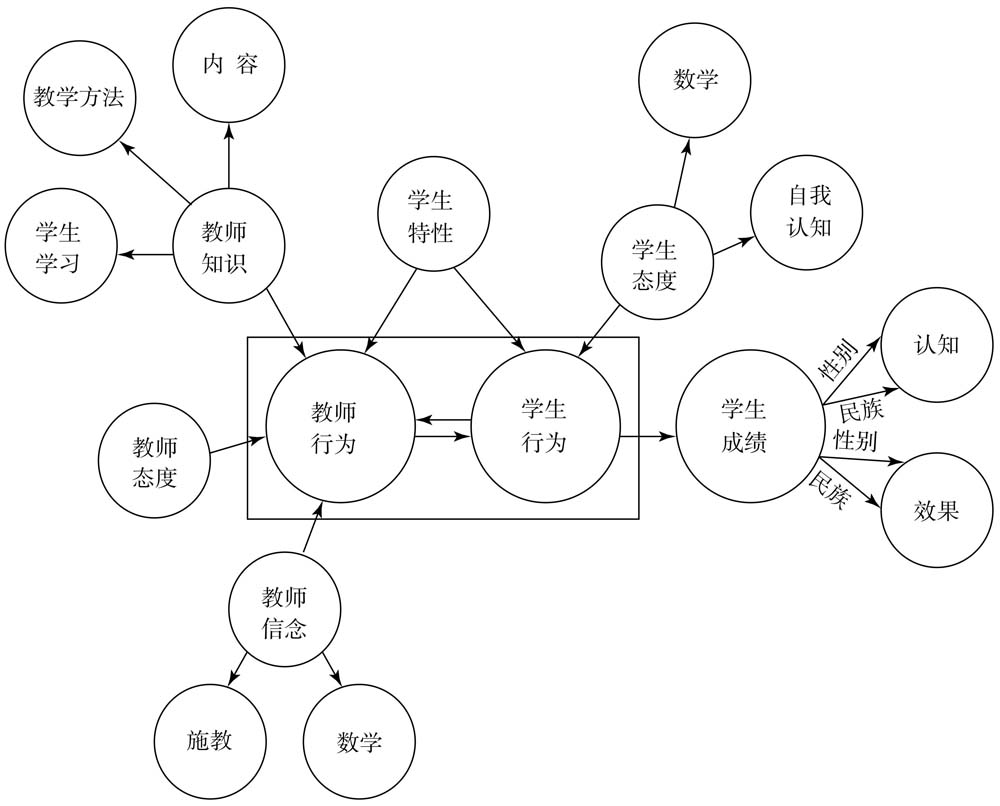
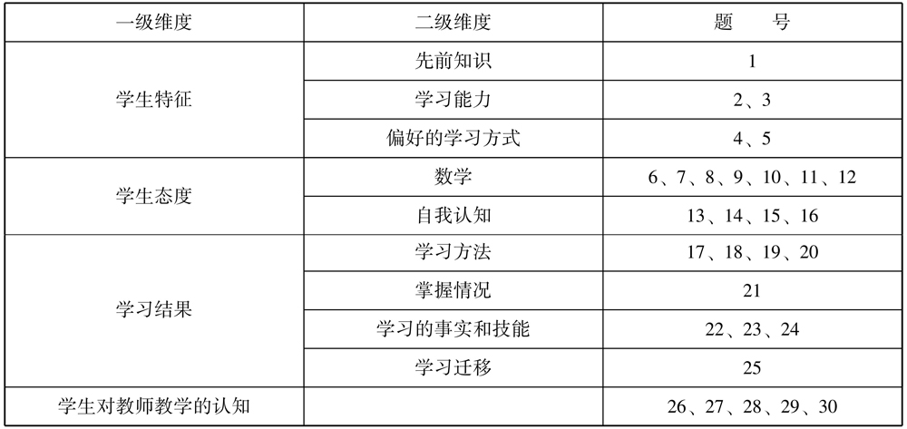
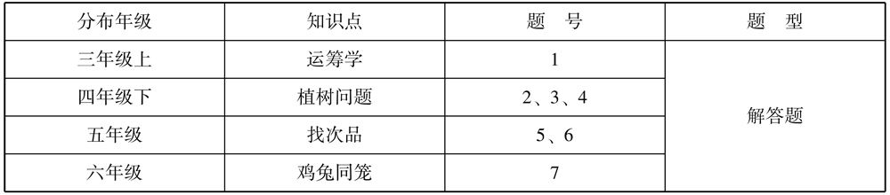
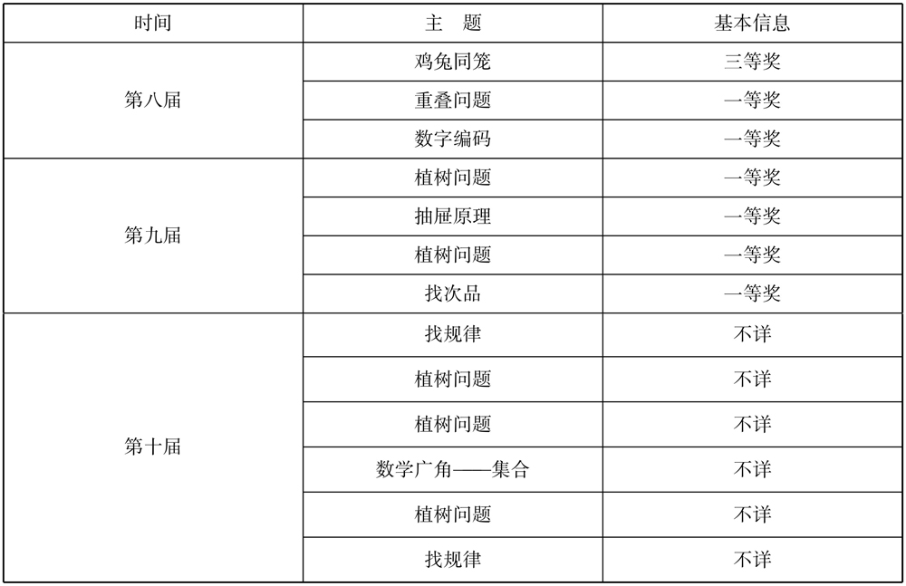

发现一个问题比解决一个问题更重要。
——［匈牙利］波利亚（George Polya）
研究方法的选取取决于研究目的。良好的研究设计为研究的实践工作打好了基础。这一章将围绕研究目的，逐一论述如何研究所提出的问题。
这一章的研究将在前两章的基础上进行。这一章的开头重申研究目的，说明研究对象的选取，厘清研究思路，选用研究方法，设计研究工具，最后是收集数据和数据编码与分析。
数学广角中的内容主要包括：典型名题（如鸡兔同笼），近现代数学中的一些重要问题（如统筹、排队），一些重要的数学方法、手段、原理等，具有相当大的难度和抽象性；数学广角的内容第一次进入小学数学教材，教师缺乏相关的教学经验，即使在各种组织的观摩学习中，也缺少一种理性的审视。因此，这项研究的目的是通过对教师关于数学广角的教学情况和学生的学习情况进行调查研究，对目前数学广角的教学情况有一个整体的把握，提出教学中科学合理的地方和存在的不足、具体教学中存在的问题和困难，再通过更深层次的分析，给出对这部分内容教学的建议，希望能够为教师在这部分的教学探索做出一定贡献，也希望能够为教科书编写人员在这部分内容的选材和编排上提供一些依据和参考。
由于需要从各个角度进行科学的分析，因此研究的对象较为复杂，主要包括教学的主体（学生）和主导者（教师），以及两者之间的相互作用（教学活动），在这一节会详细说明选取的方法。
首先，随机选取了昆明市两所小学的三个年级（四年级、五年级、六年级）的学生作为研究对象，再随机抽取8个班级进行调查。其次，选取教师样本。教师样本的选取较为广泛，有来自昆明市、成都市、贵阳市三个城市的若干名教师（以各地方的学科带头人为主）。最后，分别选取了4节来自深化小学数学改革全国观摩会上的观摩课和昆明市教师上的4节常态课作为研究对象。
研究方法服务于研究目的，目前在国际数学研究中，研究教学的方法主要有案例研究、调查研究、实验研究、准实验研究、比较研究、行动研究、人种学研究和文献研究8种。为了达到多视角、深层分析的目的，本项研究采用的研究方法有调查研究、文献研究、比较研究、案例研究，同时采用课堂观察、个案研究、数据统计分析以及教育经验总结等来收集数据。
1．调查研究
调查研究就是为了了解情况而进行的考察（多指导现场）研究，包括探究事物真相、性质、规律等；考虑或商讨意见、问题 [1] 。调查研究是研究者有目的、有意识地通过对社会现象的了解、考察和分析、研究，来科学阐明社会生活的本质及其规律的一种认知活动 [2] 。调查研究就是围绕着研究目的，有选择地收集教育现象的实证材料，通过定量与定性的方法来分析和解释研究的问题。总的来说，调查研究包含两层含义：一是运用观察、调查、询问、测量等方式有选择地收集数据；二是对收集到的事实材料进行思维加工，完成一个从感性认识到理性认识的过程，进而解释教育现象的本质特征，正确地把握教育的现实情况与变化过程。
2．文献研究
以教育文献资料为研究对象，探讨和研究某种教育现象或规律，深化教育认识、解读教育问题的方法称为文献研究法 [3] 。文献研究法就是对文献进行查阅、分析、整理，从而找出所研究问题本质属性的一种研究方法，主要指收集、鉴别、整理文献，并通过对文献的研究形成对所研究问题的科学认识 [4] 。在确定了研究的问题之后，对已有的研究进行查阅，了解别人做了什么，别人的思想观点、研究角度、遇到的问题和相应的解决方法，作为写作的基础，而对别人研究的不足之处的发现是创新点的来源之一。
3．比较研究
比较研究方法是指对物与物之间和人与人之间的相似性或相异程度的研究与判断的方法。具体说，比较研究方法又称类比分析法，是指对两个或两个以上的事物或对象加以对比，以找出它们之间的相似性与差异性的一种分析方法 [5] 。数学广角课堂教学的研究，主要是在优质课之间进行比较，归纳优质课的共同特征；在常态课之间进行比较，找到常态课的一般情况。
4．案例研究
案例研究是一种研究策略，其焦点在于理解某种单一情境下的动态过程。案例研究可以是单案例，也可以是多案例，可以用来实现不同研究目的 [6] 。在这项研究中，案例研究主要用于教学案例的分析。选取多个案例，建立分析框架，多角度分析，以了解数学广角课堂教学的基本情况。
5．课堂观察
课堂观察在教育研究中使用颇为广泛。它是指研究者或观察者有目的、有计划地通过感观（如眼、耳等）和有关辅助工具（观察表、录音录像设备等）直接或间接从课堂情境中收集资料，从而获得经验事实的一种教育科学研究方法 [7] 。对教学现状的调查研究，不仅是对教师态度的了解，更重要的是对教学课堂的研究。
在这项研究中，就是要围绕数学广角的优质课和常态课进行观察反思，因此课堂观察就是这项研究的主要研究方法之一。孙亚玲教授（2002）的研究认为：观察者在观察活动中一般可能扮演完全参与者、非参与者、半参与者的角色。在这项研究中，研究者以非参与者的角色进行研究，主要使用成熟的课堂观察量表进行研究，因此在研究中就存在着研究者的主观判断和分析归类，这是采用此法进行研究的不足之处。
6．个案研究
关于个案研究，在20世纪80年代便形成了系统的理论，是社会科学研究的方法之一。但是直至今天关于什么是个案研究仍旧存在着不同的观点，并且这些观点之间存在较大的差异。比如有学者提出：“个案研究是一种实证的探究，它在不脱离现实生活环境的情况下研究当前正在进行的现象。” [8] 这个定义强调了个案研究对情境的依赖。而有些观点强调研究对象是个案，比如：“个案研究就是以单一的对象进行深入研究的方法。” [9] 再比如郑金洲等人把个案定义为“采用各种方法，收集与研究与问题相关的资料，对单一个体或一个单位团体做深入细致研究的过程。” [10] 国外学者斯泰克认为“个案研究的意义在于单个的个案，而非探究时使用的任何方法。”在这项研究中，研究者要做的案例研究比较符合把个案研究定义成一种选择研究对象策略的定义，也就是说研究中所选取的个案是研究的对象，并且是单个的研究、对比个案。
7．数据统计分析
SPSS是世界上最早的统计分析软件。其操作简单，已经在社会科学、自然科学的各个领域发挥了巨大作用 [11] 。它是一种亲和性好、操作简易的软件，输出的结果也极为美观。
该项研究在问卷调查之后，对数据进行整理、录入和分析，均采用SPSS软件进行分析并得到结论。
8．教育经验总结
教育经验总结是以教育实践工作者为主体，对其从事的一个完整的教育活动的过程加以主观的回顾、反省、总结，通过分析和思考，认识教育措施、教育现象与教育效果之间的一些必然与偶然的联系，为以后（或他人）从事类似的教育工作提供良好的经验、典型，以供借鉴 [12] 。教育经验总结具有实践性强、反思性强等优点，但是也存在信度和效度不够、适用性受限制等问题。
在确定了研究的问题和研究的方法之后，需要制定科学的研究工具，因此本节将对教师问卷、学生问卷、学生测试卷、教学案例分析进行详细说明。
1．问卷编制的理论基础
使用该调查问卷主要是想了解小学数学教师对数学广角教学的认识和理解。出于对研究全面性的考虑，本书根据卡彭特（Carpenter）和芬内玛（Fennema）提出的科研与课程发展模型设计出了六个调查维度：维度一，教师的知识；维度二，教师的态度与信念，主要是指对数学广角的态度与信念；维度三，教师的决策；维度四，课堂讲授；维度五，教师对学生的认识力；维度六，教师的课堂组织能力。
2．问卷的结构
1）问卷的组成成分
小学数学教师数学广角教学情况调查问卷分为3个部分：第一部分主要是基本情况调查，包括教师的性别、年龄、教龄和职称；第二部分为问卷说明，主要是调查的目的和问卷填写说明；第三部分为具体题目，共4个维度，30个题目，其具体说明如表3.1所示。教师调查问卷的选项具有开放性，主要用于定量分析。
表3.1 教师调查问卷各个维度的结构及题目说明

2）对教师调查问卷的说明
（1）教师观念。设置此部分问题的目的是了解教师的教学观、数学观和对数学广角的认知。这类问题分布在问卷中的3、4、5、8、11、12、25题。
（2）教师知识。该部分主要从教师的教学知识和数学广角知识入手，侧重了解教师知识的来源、组成、困难之处。这样的问题在问卷中涉及的题目是2、6、7、9、10、24、30。
（3）教师对学生的认知力。该部分侧重了解教师对学生心理、思维情况的认知和学习困难的情况以及学生认知的知识。该类问题在问卷中涉及的题目是13、14、15、26、27、28、29。
（4）教师的教学决策。该部分主要是通过了解教师的教学内容、教学方法的选用等方面了解教师所做决策的情况。该类问题在问卷中涉及的题目是1、16、17、18、19、20、21、22、23。
调查问卷中30个题目选项的设置由有层次之分的选项和没有层次之分的选项构成。出于研究的需要，根据具体的问题制定选项，有的问题选项设置具有层次性，清晰明了，没有歧义易于作答，有的问题的选项设置没有层次性，具有独特性，能更深层次地了解一些问题，但是也不排除它们存在不穷尽和受研究者观念限制的缺陷。
例如，27题是有层次性的选项，选项为：
A．完全能
B．基本能
C．偶尔能
D．几乎不能
15题的选项是没有层次性的具体设置，选项为：
A．没有理解，迁移困难
B．学生的思维水平达不到
C．建立模型和记忆有困难
D．题目灵活，学生的解题策略较少
3）调查问卷的效度和信度
效度和信度是评判一个测试工具是否能用的必备工具，信度代表了测试工具所测结果的稳定性、可靠性及一致性，效度是测量工具能够准确反映所测事物的程度。研究中为了确保较高的效度和信度，主要采用了以下程序：首先是编制问卷的前期，阅读大量关于教学及教学研究的文献，了解已有的研究理论，并寻找适合本研究的理论基础，在此基础上划分维度，以确保研究的内容不偏离，能够基本反映数学广角教学现状的基本情况。其次是请有关专家、特级教师仔细阅读问卷中的各题目，请他们提出不合理的地方，此后根据反馈意见修改所有被标注的地方，包括逻辑顺序、题目设置、语义表达等。问卷形成之后，先进行调查，然后将调查结果录入SPSS19.0进行信度分析［本调查的结果为内部信度（克隆巴哈系数）α ＝0.723］，保证了问卷的信度。
1．问卷编制的理论基础
学生的学习问卷主要以Biggs等人的学习的3P模型和程度4模型为理论基础设计问卷的维度和问题。
Biggs等人通过对教学环境进行系统的研究，最终得到了学习的3P（Presage-Process-Product）模型，其具体内容如图3.1所示。3P模型强调情境化的学习方式，意思是学生将根据学习的内容和评价方式选择不同的学习方式，而教学最重要的工作是“鼓励学生充分参与到最可能产生预期学习结果的教学活动中 [13] 。

图3.1 3P模型
程度4模型是一个具有强有力理论基础的研究。在这个模型里，学习成绩是建立在学生自己的行动或行为上的，而学生的这些行动将受教师的因素、学生自己的态度和信念等的影响，具体结构如图3.2所示 [14] 。

图3.2 程度4模型
将以上两个研究学生学习的理论进行综合、对比，找到了解学生基本学习能力的角度和内容，据此确定学生调查问卷包括的范围和内容，以此为基础设计这项研究的学生调查问卷。
2．学生调查问卷的结构
1）学生调查问卷的组成
学生数学广角学习情况的调查问卷分为3个部分：第一部分主要是基本情况调查，包括学生的近期考试成绩、所在年级和性别的基本情况；第二部分为调查问卷说明，主要是调查的目的和填写说明；第三部分为具体题目，共4个维度，30个题目，由于问题涉及态度、频率和一些没有程度区分的具体问题，因此选项共有3种情况：态度方面设置为“A．非常赞同 B．比较赞同 C．不太赞同 D．非常不赞同”；层次方面设置为“A．经常联系 B．有时联系 C．极少联系 D．从不联系”，而具体问题则视根据具体的情况设置相应选项。其具体说明如表3.2所示。
表3.2 学生问卷各个维度的结构及题目说明

2）对学生调查问卷的说明
一是学习数学广角时有关情况的频繁程度的问题。目的是了解学生对相关内容在程度方面的情况。这类问题在学生调查问卷中涉及的是1、2、3、12、19、20、29、30题，横跨了4个维度，其选项关键词是以“A．经常 B．有时 C．极少 D．从不”为中心。
二是学生在学习数学广角的过程中，对学习和教师教学的感受和看法的问题。这类问题主要调查学生的认同感和满意度。这样的问题在学生调查问卷中涉及的是7、8、9、11、13、16、17、22、23、24、25、26、27、28题，其选项的设置是“A．非常赞同 B．比较赞同 C．太不赞同 D．非常不赞同”。
三是根据具体的问题而制定选项的问题，与第一类和第二类选项的统一性不同，这一类选项没有层次性，具有独特性，其目的是更深层次地了解一些问题。这类问题在学生调查问卷中主要涉及4、5、6、10、14、15、18、21题。
3）问卷的效度和信度
研究中为了确保较高的效度和信度，主要采用以下程序：首先是编制学生调查问卷的前期阅读论文，查找已有的相关的调查问卷，同时阅读大量关于教学及教学研究的文献，了解相关的研究理论并找到适合本研究的理论基础，在此基础上确定学生调查问卷的维度，确保研究内容不偏离并能与教师调查问卷相互联系，能够基本反映数学广角学生学习的基本情况。其次是请专业人员和一名特级教师阅读学生调查问卷中的各题目，指出不合理的地方，再根据反馈意见修改被标注的地方，包括逻辑顺序、题目设置、语义表达等，之后再把该调查问卷分给两个三年级的学生做，然后通过学生的填写情况及与学生的沟通情况，来判断他们对题目和选项的理解情况。该调查问卷形成之后，先在某小学进行调查，调查结果录入SPSS19.0并进行信度分析，此次学生调查问卷的分析结果为：内部信度（克隆巴哈系数）α ＝0.862，分半效度是0.722。另外，在调查的时候由任课教师和一名本校的实习生共同发放学生调查问卷，监视学生填写该调查问卷的整个过程，这也从侧面保证了该调查问卷的信度。
定期对学生进行测试是评价学生学习能力和纸笔学习情况的重要方式之一，也是教学评价的重要内容。在这项研究中以考试的形式对学生进行测试，有利于考查学生的基本知识、基本思想方法，有利于发现学习中、教学中存在的问题。由于数学广角的内容采用的是分散编排的方式，因此在此只选取了五年级和六年级学生作为测试的对象。测试所用的7道题目来自历年期末考题、书上课后练习题和教学参考书上的题目。具体测试知识点如表3.3所示。
表3.3 测试卷题目分布情况

植树问题是数学广角教学内容中较受争议的一部分，教学难度较大，教学过程中存在的问题较多，因此题目所占比例最大。五年级学生没有学习过找次品和鸡兔同笼问题，六年级孩子还没有学习过鸡兔同笼问题，故可以将其作为一个比较的维度，但是这样设计也会有些不合理的地方，因为无法排除成熟的影响。
有学者将访谈法的含义概括如下：“访谈法即作为研究性交谈的访谈，是研究者通过口头谈话的方式从被研究者那里收集第一手资料的一种研究方法。” [15] 在这项研究中，对教师的访谈采用了个别访谈法。围绕访谈提纲，以半结构访谈为主，了解教师对数学广角教学的看法，以及教师在教学中存在的困难等情况。
课堂教学是教育的主要阵地，从研究课堂教学入手可以更好地了解教学的现状。为了使研究更加丰实，在此我们把教学案例作为单独的一章进行分析。结合前几章的研究，为了选取的教学案例兼具代表性和有一定的指导作用，本部分的研究以2009—2013年的4节优质课（全为录像课）为主，再辅以4节常态下教学的课（即常态课）。常态课的选取以保持真实性为原则，以观课、记录、议课、交流教学设计为主要方式，研究者将观察到的教学记录进行分析。由于优质课具有可以反复观看和便于转录等特点，因此优质课的选取和分析较为复杂，具体案例的选取和分析框架建构如下。
1．优质课教学录像个案的选取
这部分的研究采取比较教学录像的思路，其目的是更全面、更深入地获取数学广角教学情况资料，同时与第5章的调查研究相互配合，以避免研究过于片面，仅涉及态度的情况。
1）个案来源与选择的标准
这项研究把调查研究和教学个案研究作为研究的方法，且调查研究和常态课研究在学校完成。由于优质课一般都以录像的方式存在，因此把教学录像研究的来源定于优质课的范畴。优质课在很大程度上体现了教学改革的思想、方法和较好的教师素质。根据本书的研究目的将优质课定义如下：指示范课，即被作为样例在国家级的课堂教学观摩活动中展示的课。所以，把个案选取的范围限定为全国第八届到第十一届“深化小学数学教学改革观摩交流会”中的主题为数学广角的课。
“深化小学数学教学改革观摩交流会”是由中国教育学会小学数学教学专业委员组织的每年一届的教学观摩活动，其目的是深化小学数学教学改革，因此每一届都会围绕教学改革提出相应的教学宗旨，比如，第九届的宗旨为：交流各省深化小学数学课堂教学，落实素质教育，贯彻素质教育，贯彻第三次全国教育工作会议精神，培养学生的创新意识和实践能力，提高教学质量和上好不同类型的课，推动小学数学教学改革向纵深发展 [16] ；第十届、十一届的宗旨为：交流各省（自治区、直辖市）及新疆生产建设兵团深化小学课堂教学，落实素质教育，贯彻《国家中长期教育改革和发展规划纲要（2012—2020年）》的精神，培养学生的创新意识和实践能力，提高教学质量和上好不同类型的课，推动小学数学教学改革向纵深发展 [17] 。总之，深化小学数学教学改革观摩交流会始终围绕着教学改革的最新动态。在该交流会上，教师们结成团队参赛，将教学改革的实践情况在课堂中展示，再通过专家点评进一步扩大交流，增加教师对教学改革的理解，促进素质教育的落实，培养学生的创新意识和实践能力。
2）观摩课的筛选
在研究者能力所及的范围内，通过网络收集等方式，收集到了全国第八届到第十届深化小学数学教学观摩交流会上的全部展示课，其中，以数学广角为主题的课共有13节，将其作为个案的来源。接下来，在这13节展示课中进行筛选，筛选的标准主要依据该课的排名、教师的性别、教师所属地域、课题是否相同这几个因素。所收集的13节课的具体情况如表3.4所示。
表3.4 三届数学广角主题优质课的基本信息

由于这三届中以数学广角为主题的优质课中，有不同届的相同主题，有同一届的相同主题，但是没有第八届到第十届都有的主题，因此我们把不同届的同一主题和同一届的不同主题作为比较分析的主要视角，再兼顾教师的性别、教龄和地域进行选取，构成了以下个案组（见表3.5）。
表3.5 选取的个案组
| 第一组（不同届，不同主题） | 数字编码（第八届） | 找次品（第九届） |
| 第二组（同一届，同一主题） | 植树问题（第十届） | 植树问题（第十届） |
如表3.5所示，这部分研究选取了第八届、第九届的不同课题和第十届的两个相同课题，教师的性别分别是两男、两女，教龄都是十年以上。选取的这4个个案在时间上具有可比性的同时，在同一主题或不同主题之间也可以进行比较，这样有利于从多角度观察数学广角教学优质课的共同特征。
2．优质课教学录像个案的分析
由于找到个案的原教案较为困难，但通过网络视频保留下来的课，可以反复观看，因此这部分研究主要采用课堂观察法，课堂观察法是一般观察法在课堂研究中的应用。它是指研究者或观察者带着明确的目的，凭借自身感官（如眼、耳等）及有关辅助工具（观察表、录像录音设备等），直接或间接从课堂情境中收集资料，并依据资料做相应研究的一种教育科学研究方法 [18] 。由于观察的主观性和有限性，研究者还将个案录像的语音转录成文字，标注好课的节奏和时间，希望辅助揭示数学广角教学优质课的特征。
1）分析框架的建立
课堂系统的复杂性决定了研究不可能面面俱到，也不可能把课堂中的所有要素都进行研究，因此只能选取部分重要的方面进行研究，使研究具有可行性和代表性。课堂教学应该从哪些方面研究？广而言之，为什么教、教什么、怎么教是思考教学问题和考查教学实践的三个基本问题 [19] 。围绕这几个问题进行思考可以为课堂教学分析框架提供参考。同时，参考关于教学要素的理论研究和课堂教学研究中已有的研究框架来确定一个科学的分析框架很重要。
在已有的关于教学要素的研究中，具有代表性的观点有：三要素说、四要素说、多要素说（五要素说、六要素说、七要素说）和三三构成说等。三要素说研究者认为：教学包括教师、学生、教学内容（课程） [20] ；四要素说研究者认为：教学包括教师、学生、教科书和教学手段四要素 [21] ；七要素说研究者认为：教学要素包括教学目的、教学内容、教学方法、教学环境、教学反馈、教师、学生 [22] ；三三构成说研究者认为：教学过程由三个构成要素和三个影响要素整合而成，其中三个构成要素是学生、教师和内容，三个影响要素是目的、方法和环境。以上观点给这部分研究的启示：这些观点相互间有一定的继承关系，并不存在真正的对立和冲突。教师、学生和教学媒介（教学内容、课程、教科书）是教学的最基本要素，在众多观点中都认同这三要素。
TIMSS录像研究使用的分析框架也值得这部分研究借鉴。TIMSS1955录像研究从以下5个方面对数学课堂进行研究：
（1）课堂上教的是何种数学？
（2）数学概念和过程是如何呈现给学生的？
（3）教师期望学生在教学过程中做什么？
（4）教师是否直接讲解、总结，或者选择一些需要学生思考的问题？
（5）整节课是如何组织起来的？
TIMSS1999录像研究又从以下3个方面对数学课堂进行研究：
（1）教学内容的特征；
（2）教学活动或教学内容的展开方式；
（3）教学结构或学习环境的构成方式 [23] 。
在综合以上参照之后，可知研究的框架一定不能够脱离教学中的三要素：教师、学生和教学内容，同时，需要指向和围绕“教什么”“为什么教”“怎么教”的基本问题，这部分研究首先确立了6个研究维度：教学目标、课的设计、教学内容、教学方法、使用的教科书和教师素质。
教学目标：课结束后，达成显性目标。
课的设计：构成一节课的教学环节和各教学活动，比如，导入、新授、练习，小组合作，自主学习等。
教学内容：即“教什么”，围绕着教学目标，教师选择哪些内容来教学。
教学方法：即“怎么教”的问题，教师选用什么方法围绕教学内容教学。
教师素质：是教师个人的专业素养和教育素养在课堂上的体现，包括教师的提问技巧、教师的语言表达等。
2）分析方法
在建立了合理的分析框架后，就要找到科学的分析方法。在本部分个案研究中，分析方法采用的是定性分析和定量分析相结合的方式。通过观看录像，把录像转录成课堂教学实录的方式对教学情况进行分析，分析的步骤包括前期录像转录成课堂实录、初步分析、结论。常态课以定性分析为主。
3）课堂观察表格
本次研究使用的课堂观察表格主要参照了《课堂观察、参与和反思》 [24] ，具体情况见附录E、F、G、H。这些表格分别用于记录师生互动类型、课程结构、教师提问技巧、多元智力课程策略开发情况。为了保证观察的科学性，在使用这些表格的过程中，先对每一个观察的项目进行鉴定与说明，再让多个观察者同时进行观察记录，最后要综合使用观察结果，尽量避免观察中的主观性。
数据的收集和整理是这项研究的重要内容之一，这一小节主要阐明了数据收集和整理的情况。
一是，发放调查问卷的具体情况，在这次调查中，共发放学生调查问卷290份（不包括前期试测），收回283份，收回率96%；共发放教师调查问卷130份，收回127份，收回率接近98%；二是，学生测试卷的具体情况，共发放学生测试卷190份，回收182份，回收率95%；三是，对4名教师进行访谈，被访教师的教龄均在15年以上，且这几位教师均是所在学校的骨干教师，其中一名为特级教师。
在收集齐全所有的教师问卷、学生问卷、学生测试卷之后，开始进行编码分析。
1．数据的编码
1）SPSS数据录入的编码
问卷的统计主要以统计频数为主，将选项A命为4，选项B命为3，选项C命为2，选项D命为1。根据题目选择的情况直接录入所命名的数据。在有层次之分的选项里，命名的数据具有程度性，数据越大程度就越大，数据越小程度就越小；在没有层次之分的选项里，命名数据仅表示频数。
2）学生测试卷编码
正确的录入1，错误的录入0。
3）访谈教师编码
共对4名教师进行了访谈，他们的编号分别为A、B、C、D。
4）优质课的编码
因为部分研究属于研究伦理，不方便透露被研究教师及其课题，因此为了简洁和易区分，将优质课分别编号为A、B、C、D。
2．数据的分析
将收集的数据录入SPSS19.0进行分析。教师调查问卷以描述统计为主，例如百分数；学生调查问卷以平均值的计算为主，平均值越大表示频率越高或者比例越大。显著性差异分析方面，受李克特量表的限制，使用卡方检验逐题的分析方式。
关于研究伦理的问题，孙亚玲教授说：“研究伦理问题，也就是我怎样获得研究对象的信任和支持，怎样才能消除他们的担心、不理解，怎么样保证不对我的研究对象带来任何不良影响，相反使他们因为参加了我的研究而获益。 [25] ”要做到孙教授说的这样是非常困难的，因为这需要深入教学一线去观课。另外，到班级里让学生做测试卷是非常困难的事情且容易存在不真实的情况。针对这些问题，作为研究者要注意协调，不能随意地去获取一些虚假的信息，也不能去欺骗教师，只能诚实地告诉学校相关负责人研究的意图，答应学校做好保密工作，确保所有数据只做研究使用并且在文中不能出现该校名称。作者因在研究之初得到了相关负责人的支持，故能够很顺利地选定班级。在学生做测试题和问卷之前，应先向学生说明来意，让他们放下考试成绩好坏的警戒，放心地作答。作者在进行本次研究时得到了教师的理解，教师不仅不反对在其班上进行相关测试，而且在测试过程中嘱咐学生认真做，希望能够看一看测试的结果。
关于在教室里观课和记录的伦理问题，教师一般不会反对研究者去听课，他们把这当成一种学习，因此研究者可以看到真实、自然的课程教学。有一部分教学是研究者在实教学过程中积累的，教课老师知道了听课老师研究意图后，表示很乐意将她的课作为研究对象，也希望得到提高。他在网络上找到了优质课视频，研究者忠于原视频内容，基于课堂事实，一字一句进行了转录。
总之，本次研究得到了学校领导、教师的大力支持，研究者在研究过程中保持着中立、客观的态度，坚持保密原则，在分析结论的过程中也绝没有妄断，但是仍旧有一些不客观的地方，敬请读者谅解和指正。
简言之，这章研究工具的设计主要包括以下方法：
（1）小学数学教师数学广角教学情况调查问卷。总的来说，该调查问卷包括调查问卷设计的理论基础、调查问卷的调查维度说明、调查问卷选项说明、调查问卷的效度和信度、调查问卷的整理和编码、调查问卷的发放和收回等情况。
（2）小学生数学广角学习情况调查问卷。其同样包括调查问卷的理论基础、调查问卷4个维度的具体情况说明、问卷各题目设置与选项情况说明、问卷的信度效度检测、问卷的编码情况和问卷发放与收回情况等。
（3）小学生数学广角学习结果测试卷。该测试卷说明了测试卷题目组成情况，测试卷的发放与收回情况。
（4）教师数学广角教学访谈提纲。其简单说明了访谈的类型（以半结构访谈为主）。
（5）教学案例分析（个案分析）。这是较复杂的一部分内容，主要涉及个案分析框架的建立和课堂观察使用的各种量表。
总共有5种研究工具：第一种和第二种是相互关联的问卷调查，希望分别从教师和学生的角度获得数学广角教学态度方面的情况；第三种和第四种工具是验证和补充，即测试卷是对学习结果的初步检测，第四种是对教师态度的深入发掘；而最后的个案分析是教师态度背后的行为体现，即在一定的观念下，课堂上体现了什么样的教学行为，而这些教学行为又在体现教师教学的什么观念。即它们是一个相互补充和验证的关系，有助于对数学广角教学现状的深入认识。
[1] 现代汉语小词典［M］．北京：商务印书馆，1983.
[2] 张性秀，常艳娥．调查研究理论与方法［M］．长沙：国防科技大学出版社，2001.
[3] 符明弘．教育科学研究实用方法［M］．昆明：云南科技出版社，2003.
[4] 李秉德．教育科学研究方法［M］．北京：人民教育出版社，2009.
[5] ［英］霍恩比，王玉章等译．牛津高级英汉双解辞典［Z］．北京：商务印出版社，2009.
[6] 李平，曹仰锋．案例研究方法［M］．北京：北京大学出版社，2012.
[7] 裴娣娜．教育研究方法导论［M］．合肥：安徽教育出版社，1995.
[8] ［美］罗伯特·K·殷．案例研究：设计与方法［M］．周海涛，译．重庆：重庆大学出版社，2004.
[9] 王坦，张志勇．现在教育科研：原理、方法、案例［M］．青岛：青岛海洋大学出版社，1998.
[10] 郑金洲，陶保平，孔企平．学校教育研究方法［M］．北京：教育科学出版社，2003.
[11] 符明弘．教育科学研究实用方法［M］．昆明：云南科技出版社，2003.
[12] 华东师范大学教育系，杭州大学教育系．现代西方资产阶级教育思想流派论著［M］．北京：人民教育出版社，1980.
[13] John Biggs, David Kember, Doris Y. P. Leung. The revised two － factors Study Process Questionnaire: R－SPQ－2F［J］. British Journal of Educational Psychology, 2001（71）: 135－136.
[14] ［美］D·A·格劳斯，数学教育学研究手册［M］．陈昌平，王继延，等，译．上海：上海教育出版社，1999.
[15] 陈向明．质的研究方法与社会科学研究［M］．北京：教育科学出版社，2000.
[16] 关于召开全国第九届深化小学数学教学改革观摩交流会的通知
[17] 关于召开全国第十届深化小学数学教学改革观摩交流会的通知
[18] 陈瑶．课程观察指导［M］．北京：教育科学出版社，2002.
[19] 刘铁芳．当前教学理论研究的思考［J］．湖南师范大学教育科学学报，2002（1）: 37－40.
[20] 顾明远．教育大辞典（第一卷）［Z］．上海：上海教育出版社，1990: 184.
[21] 罗明基．教学论教程［M］．哈尔滨：黑龙江人民出版社，1987.
[22] 李秉德．教学论［M］．北京：人民教育出版社，1991.
[23] Hiebert J, Gallimore R, Garnier H, et al.（2003）. Teaching mathematics in seven countries: Results from the TIMSS. 1999 video study（NCES 2003－2013）. U. S. Department of Education. Washington, DC: National Center for Education Statistics.
[24] ［美］阿瑟·J·S·里德，韦尔娜·E·贝格曼．课堂观察、参与和反思［M］．伍新春，等，译．教育科学出版社，2009.
[25] 孙亚玲．课堂教学有效性标准研究［M］．北京：教育科学出版社，2008.